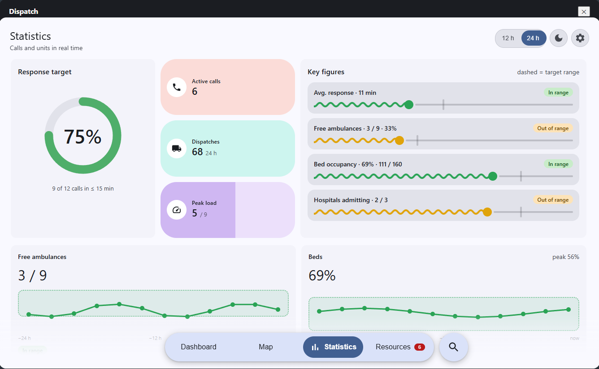
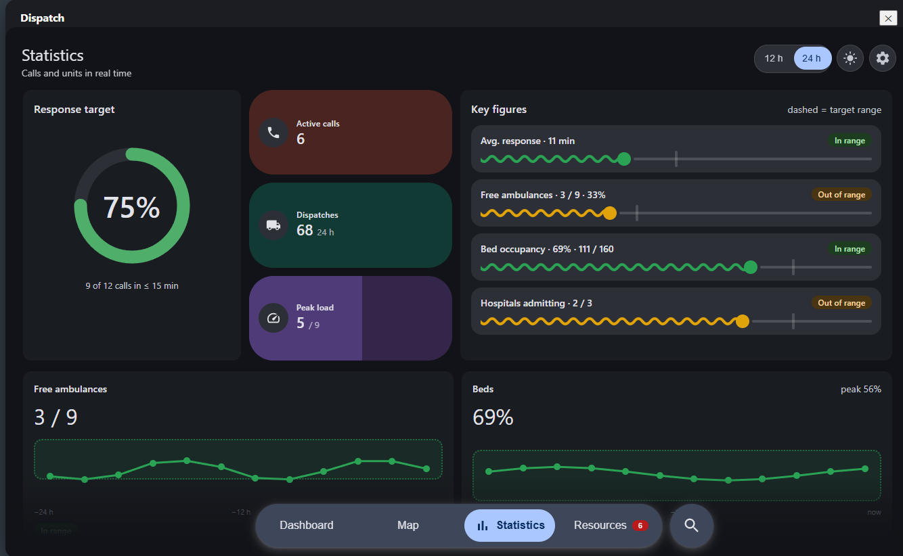

Rebuilt in Material 3: dashboard, calls, units and beds at a glance.
Every jam forms the corridor. Left lane goes left, all others right, trucks included.
In jams, overtakes and at red lights.
Ambulance, NEF, police and fire.
Mirrored automatically.

Switch any time in the panel.
Hospitals, depots, live units.
Response target, beds, free units. 12 h / 24 h.
Code, phase, units, times.
With SHA-256 hash for bug reports.
Both directions pull to the kerb.
Oncoming lane closed, whole queue passed.
Overtake, merge back, turn from any lane.
Multi-lane roads too. Convoys pass together.
Shoulder free near exits and entries.
Layout and illustrations made with AI.
UI shots and game art are from the mod.